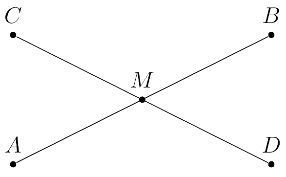

Caracterización de rectángulos
Para este caso, definiremos a un rectángulo como un cuadrilátero cuyos ángulos internos son rectos y sus lados opuestos son de la misma longitud
$\textbf{Lema. }$ Sean $A, B, C, D \in \mathbb{R}^2$. Si los segmentos $AB$ y $CD$ poseen el mismo punto medio $M$ y $|AM| = |CM|$ entonces $A, B, C$ y $D$ son los vértices de un rectángulo $R$
 Sean $A, B, C, D, M, AB$ y $CD$ como en la figura superior.
Por hipótesis tenemos que $|AM| = |CM|$ y, como $M$ es punto medio de $AB$ y $CD$ se sigue que $|MD| = |MB|$
Por el criterio $LAL$, los tríangulos $\triangle CMA$ y $\triangle BDM$ son congruentes.
Se sigue que $|CA| = |BD|$
Por un argumento análogo tenemos que $|AD|=|CB|$
Observemos que
\begin{equation*}
\begin{split}
\pi & = \alpha + 2\theta \\
\pi & = \beta + 2\gamma \\
\pi & = \alpha + \beta
\end{split}
\end{equation*}
De las igualdades anteriores tenemos que:
\begin{equation*}
\begin{split}
2\pi = \alpha+\beta + 2(\theta + \gamma ) \Leftrightarrow \pi = 2(\theta + \gamma) \Leftrightarrow \theta + \gamma = \frac{\pi}{2}
\end{split}
\end{equation*}
De lo anterior tenemos que los ángulos $\angle CBD$ y $\angle DAC$ son rectos
Lo que concluye la demostración del lema